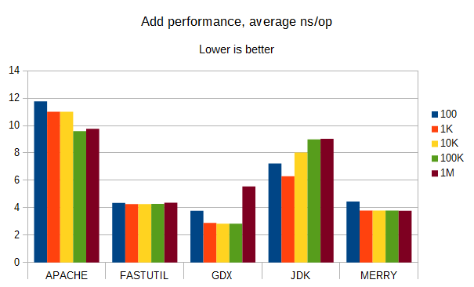
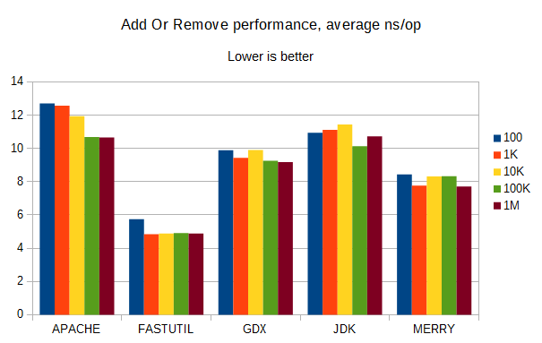
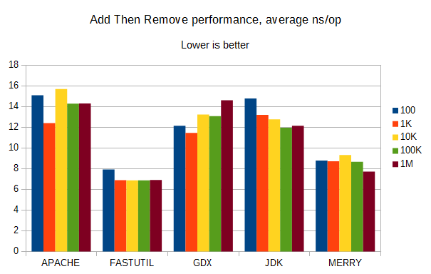
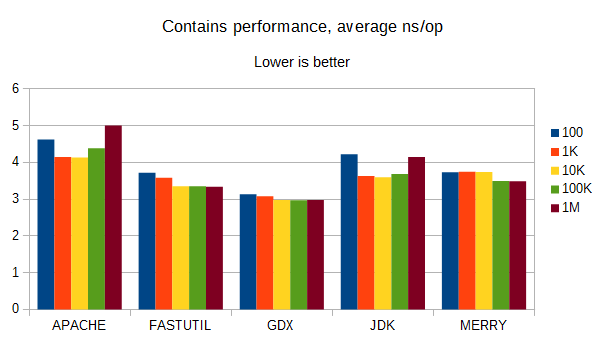
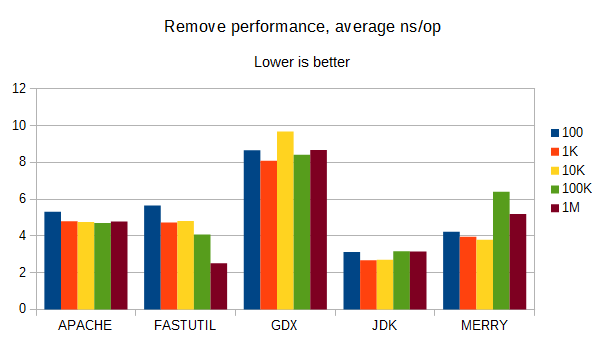
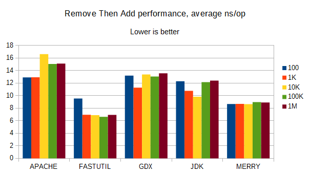

Here, we're comparing the performance of several collections libraries, including libGDX, on various operations on insertion-ordered sets of String.
Add:
Add Or Remove:
Add Then Remove:
Contains:
Remove:
Remove Then Add:
FastUtil is the big winner here, close to the top or better than the rest in most benchmarks. It requires Java 8 or higher. FastUtil uses a particularly well-optimized technique for its usage conditions, treating every key-value pair as having two "pointers" to the earlier and later items, and this makes iteration from front or back very fast. It doesn't allow for the same (very powerful) usage that libGDX and Merry's sets have, though, because it acts like a LinkedList where libGDX and Merry act like an ArrayList, and those two allow access-by-index.
Again, libGDX's ObjectSet performs very well, except when it has to remove an item. Then, it's consistently at or near the worst performance of any of these collections libraries. Its contains performance is still excellent, and it has the access-by-index advantage mentioned before as well.
Merry seems to perform fairly well considering how small the codebase is (it has fewer methods than libGDX's ObjectSet). Merry's ObjectSet is API-compatible with libGDX's ObjectSet, and it seems to be slower than libGDX by a small factor on most operations with String items, but twice as fast when it removes them. Merry is also designed to be robust against collisions or low-quality hashCode() implementations, and mixes hash codes quickly but generally well enough; FastUtil also mixes hash codes to improve resistance to bad implementations, and probably several other libraries mix in their own ways (libGDX tries, but won't resist cases with 50+ collisions). Merry allows access-by-index, and is the only ordered set here to implement alter() and alterIndex(), which are more efficient versions of a convenient code pattern.
The JDK collections have the best performance on remove and generally good performance all-around, but as the libGDX developers discovered, they tend to be memory-hungry.
The Apache ListOrderedSet does not perform well in general; it may have some unusual features that warrant further inquiry, but I don't know what those might be.
Thanks to user Art on the libGDX Discord for creating the charts, and GitHub user DiegoEliasCosta for making the benchmark project this used to measure the various libraries.